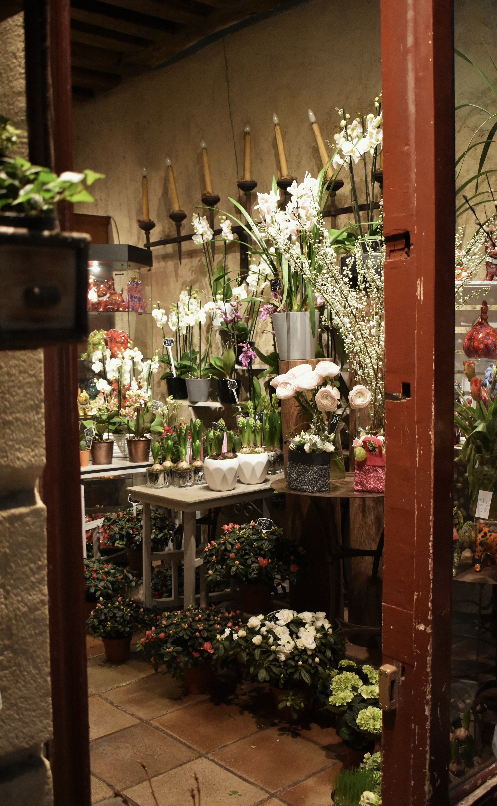
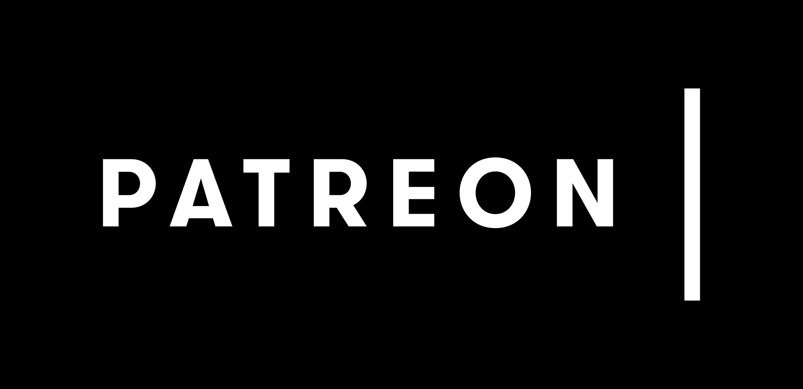

Mission

Flowerworks is a female-owned small business specializing in seasonal and sustainable floral arrangements. We are based in Southern California and source our flowers both locally and across the United States. Our motto is “flowers for a lifetime” - we equip our customers with the knowledge and tools to maintain the freshness of their flowers and preserve them as dried flowers that last into the future.FoundersWe are the founders, Delia and Rachel. We are childhood best friends who grew up together in Pasadena and got our MBA’s together at the University of Michigan, Ann Arbor. We decided to start Flowerworks in 2015 to continue our mothers’ tradition of gardening and flower preservation.ProcessOur products are curated by a team of floral specialists, ceramic artists, and flower preservation experts from around the country. We believe in sourcing a diverse set of styles and are constantly changing our collection. Feel free to contact us for custom orders.Support

Our company is partially funded by FourSeed, a venture capital firm in San Francisco. To support our small business, please visit our Patreon or contact us at any of our locations.
Locations
Santa Monica1835 San Vicente Blvd
Santa Monica, CA 90403(384) 232-7892Store Hours:
Mon 10am - 5pm
Tues 10am - 5pm
Wed 10am - 5pm
Thurs 10am - 5pm
Fri 10am - 7pm
Sat 12pm - 6pm
Sun ClosedVenice445 Abbott Kinney Blvd
Venice, CA 90292(384) 957-2283Store Hours:
Mon 10am - 5pm
Tues 10am - 5pm
Wed 10am - 5pm
Thurs 10am - 5pm
Fri 10am - 7pm
Sat 12pm - 6pm
Sun Closed